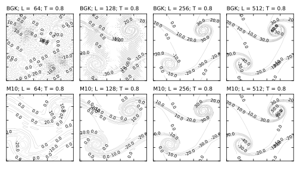

3.1. Fluid initial conditions¶
3.1.1. Density¶
The initial fluid density is always uniform and the value can be controlled via:
rho0 1.0 # default value 1.0
Some care may be required if values other than unity are used; some features in the code may not correctly account for general values.
3.1.2. Velocity field¶
The default initialisation for the velocity field is uniformly at rest. If a specific initialisation \(u_\alpha (\mathbf{r}; t = 0)\) is required, then in all cases the initial lattice Boltzmann distributions are taken to be the equilibrium values
where \(w_i\) and \(c_{i\alpha}\) are the relevant weights and discrete velocities for the model in use. The density \(\rho\) can be controlled as discussed above.
3.1.2.1. Uniform¶
A uniform, non-zero, velocity field in three dimensions can be initialised via
distribution_initialisation 3d_uniform_u
distribution_uniform_u 0.002_0.003_0.004
For two dimensions, set the \(z\)-component to zero.
3.1.2.2. Two-dimensional double shear layer¶
A standard test problem described by Brown and Minion [BrownMinion1995] initialises a velocity field in a system which is the unit square (length \(L\)) as
where \(u_0\) sets the velocity scale, \(\kappa\) is an inverse length scale related to the shear layer, and \(\delta\) is a dimensionless perturbation parameter.
In a two-dimensional system the following input key value pairs may be used
distribution_initialisation 2d_kelvin_helmholtz
2d_kelvin_helmholtz_u0 0.01 # Scale speed
2d_kelvin_helmholtz_delta 0.05 # Perturbation
2d_kelvin_helmholtz_kappa 100.0 # inverse width
3.1.2.2.1. Example: matching units¶
If we wish to run a problem similar to that described as a thin shear layer by Brown and Minion (\(\kappa = 100\)) and examine the results as a function of resolution, we need to work out the relevant lattice Boltzmann inputs (in lattice units) by matching some appropriate dimensionless groups.
Brown and Minion have a fixed system size \(L = 1\) and increase the resolution by decreasing the grid spacing. Larger values of the grid spacing give a relative poor resolution of the shear layer. A shear layer width in reduced units would be \(1/L\kappa\), and we can specify a reduced time \(T_0 = \Delta x / u_0 \delta\).
In the lattice Boltzmann, we keep the resolution \(\Delta x\) fixed and increase the system size to \(L = N\), the number of grid points. To respect the Mach number constraint, we can set, e.g, \(u_0 = 0.01\). To find the lattice Boltzmann viscosity, we can then match a Reynolds number in each case. Brown and Minion have, e.g., \(Re = u_0 \delta L / \nu = 500\) for \(u_0 \delta = 0.05\) and a kinematic viscosity \(\nu = 1/10,000\). The lattice dynamic vicosity would then be \(\eta\) (with \(\rho = 1\)) and should then match \(Re = \rho u_0 \delta N / \eta\).
It is convenient to retain the same units for \(\kappa\) in the input and convert internally. Finally, the number of lattice Boltzmann time steps is fixed to match the time T = 0.8 via the reduced time \(T/T_0\).
An example input file with actual values can be found in
./tests/regression/d2q9/serial-2kh-bm1.inp
A series of representative results are shown below for a number of different resolutions (64, 128, 256, 512 from left to right) and for two different relaxation time schemes.
Broadly, the M10 scheme is more dissipative, which helps avoid the development of noise in the more poorly resolved cases. In the limit of high resolution the results are verysimilar. For a more recent discussion of this problem in the context of lattice Boltzmann relaxation see e.g., Dellar [Dellar2014] and references therein.
D.L. Brown and M.L. Minion, Performance of under-resolved two-dimensional incompressible flow simulations, J. Computat. Phys., 122 165-183 (1995).
P.J. Dellar, Lattice Boltzmann algorithms without cubic defects in Galilean invariance on standard lattices, J. Computat. Phys. 259 270-283 (2014).